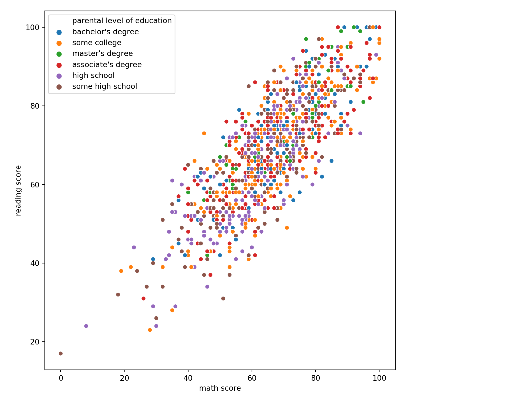
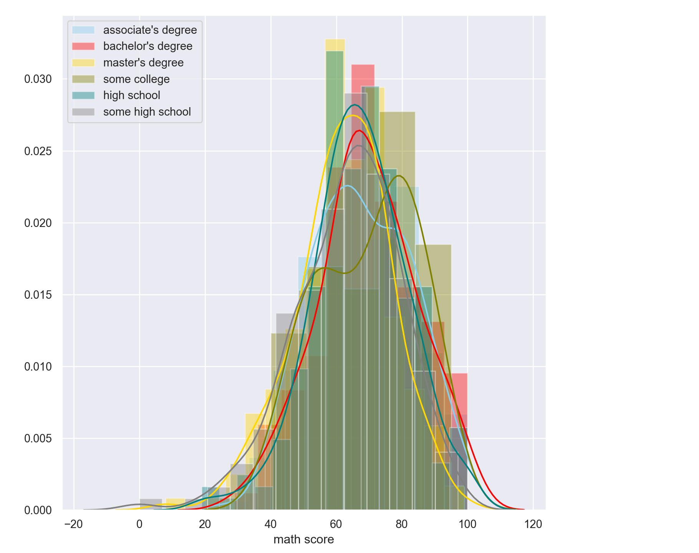
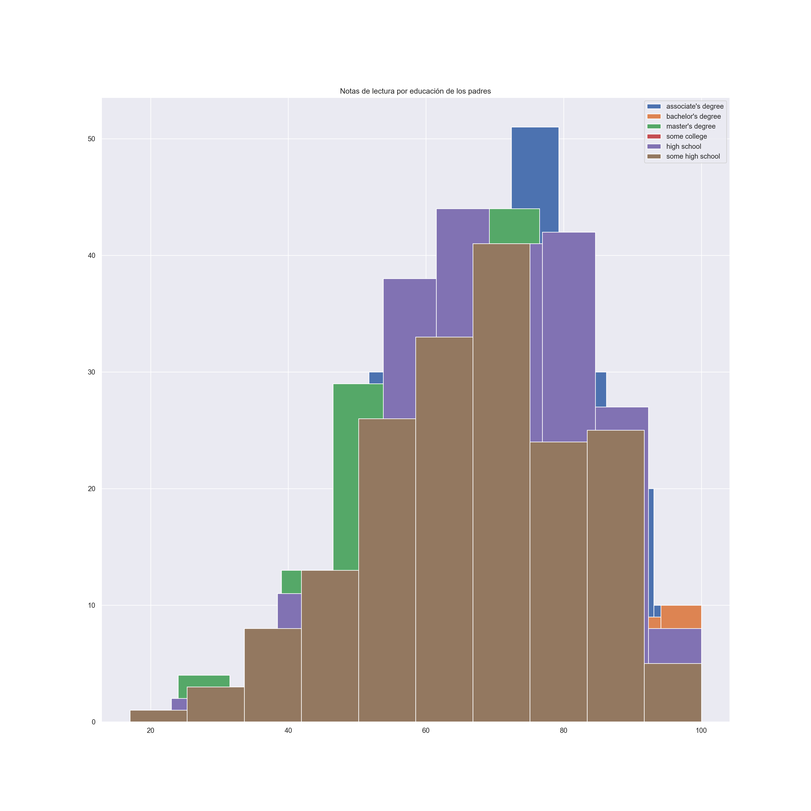
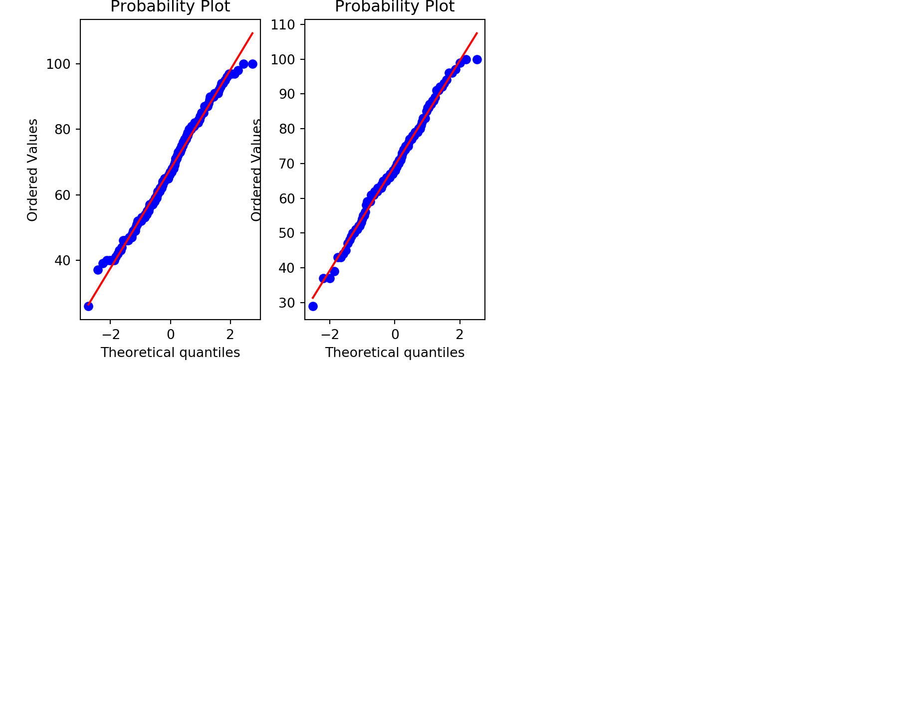
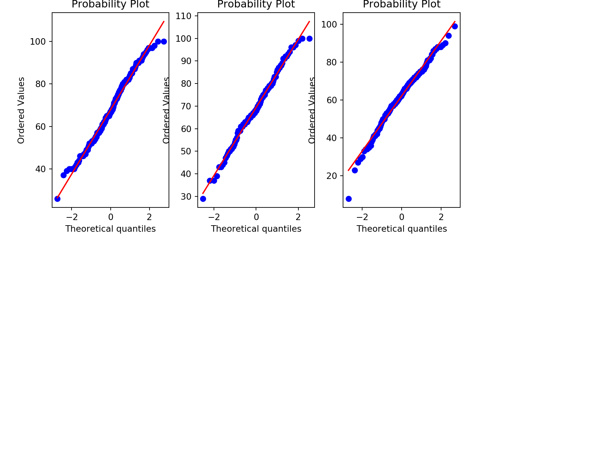
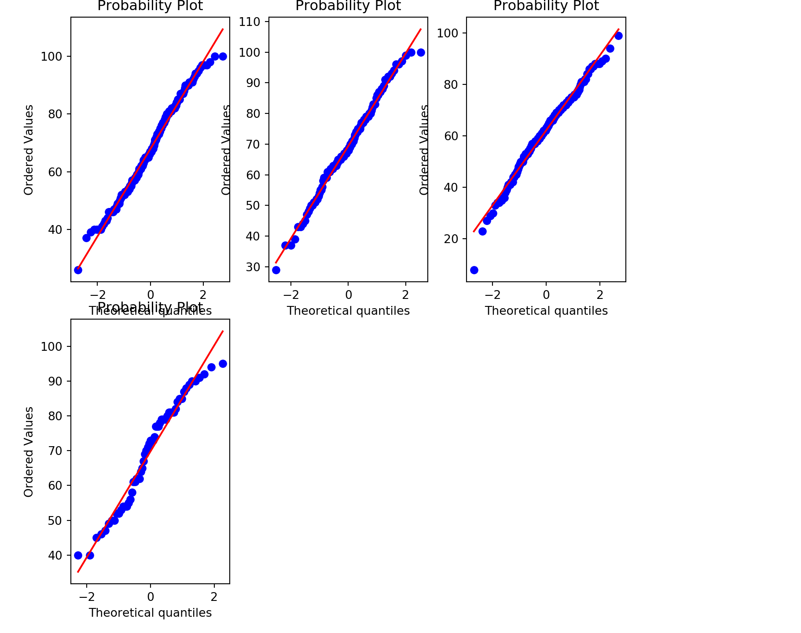
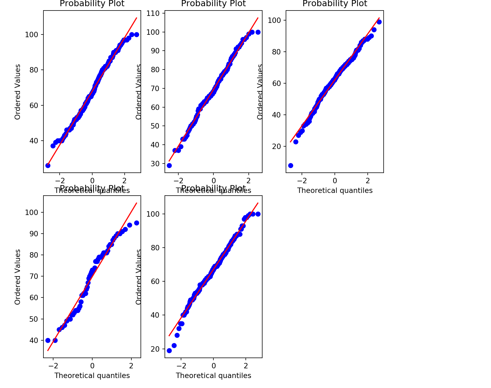
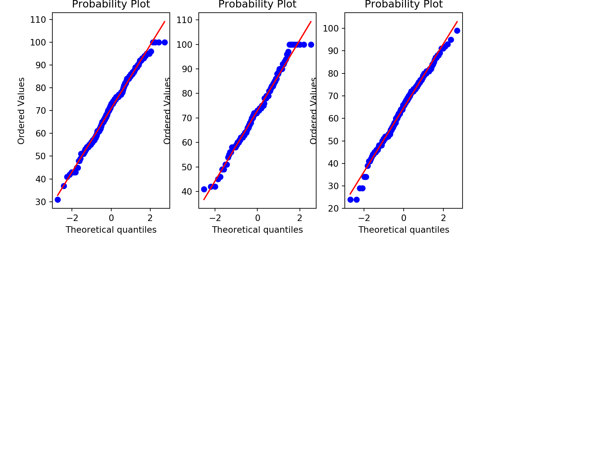
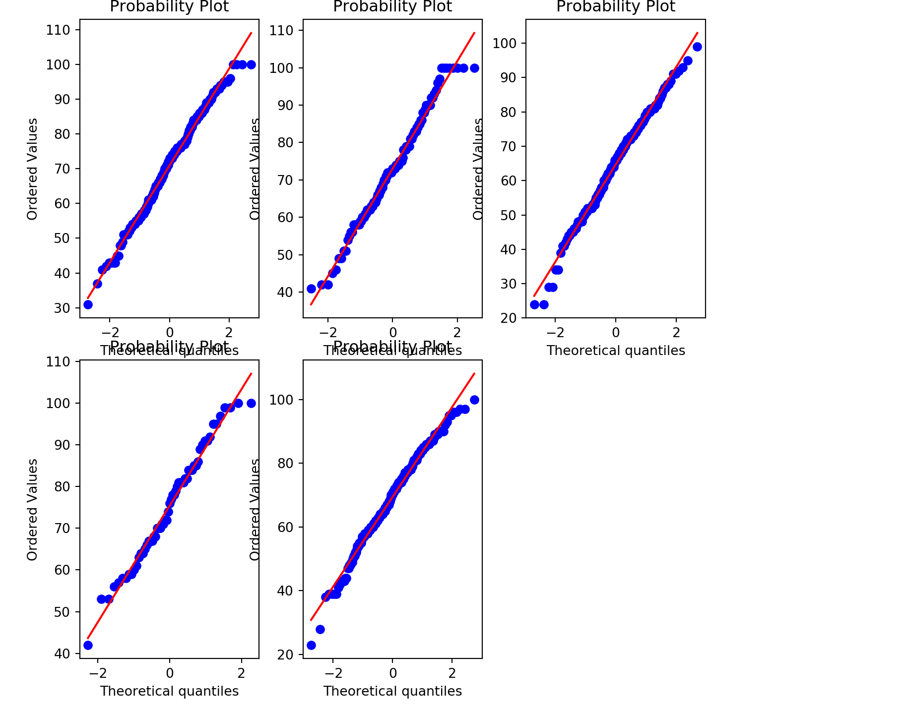
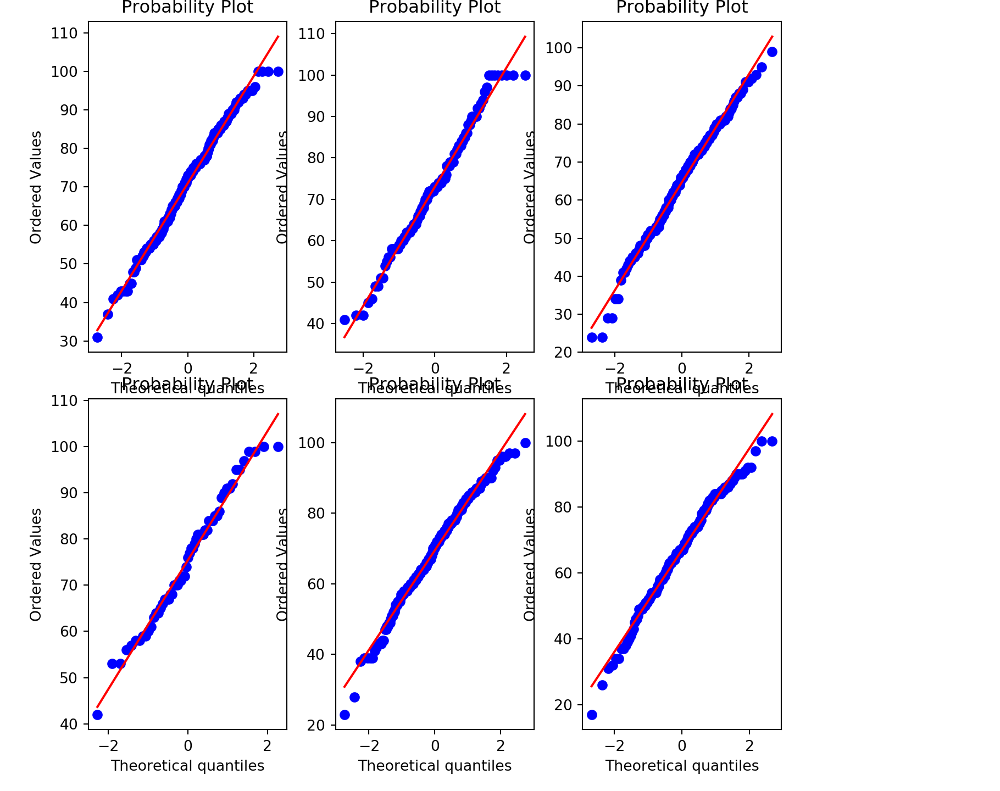

Python
Análisis exploratorio de datos con python
El objetivo es realizar un análisis exploratorio de datos (EDA) a una base de datos e identificar la posible normalidad de los datos registrados.
La base de datos que se utiliza está disponible en https://www.kaggle.com/spscientist/students-performance-in-exams (debes registrarte para descargar). Dicha base de datos se encuentra alojada en el archivo StudentsPerformance.csv e incluye las notas de tres exámenes (matemática, lectura y escritura) para un grupo de estudiantes. Adicionalmente, se proporciona información demográfica de los estudiantes y sus padres, así como sobre su desempeño escolar.
A partir de la base de datos y el análisis exploratorio de datos se hace énfasis en entender las diferencias descriptivas y la relación entre variables dividiendo la base de datos por el nivel de educación de los padres. Es decir, se ejecuta un análisis descriptivo tanto de las notas de los exámenes, como de las demás variables de las bases de datos, separando por el nivel de educación de los padres.
Carga y reorganización de datos
A través de los siguientes comandos cargamos los datos del archivo StudentsPerformance.csv al data frame “df”, renombramos la columnas del data frame para facilitar lectura y escritura de código y separamos nuestra base de datos de acuerdo al nivel de educación de los padres en 6 conjuntos.
import pandas as pd
df = pd.read_csv(r"StudentsPerformance.csv")
df1 = df[df["parental level of education"] == "associate's degree"]
df2 = df[df["parental level of education"] == "bachelor's degree"]
df3 = df[df["parental level of education"] == "high school"]
df4 = df[df["parental level of education"] == "master's degree"]
df5 = df[df["parental level of education"] == "some college"]
df6 = df[df["parental level of education"] == "some high school"]Resumen y visualización de la composición los datos
import pandas as pd
print (df.shape)## (1000, 8)print(df.head())## gender race/ethnicity ... reading score writing score
## 0 female group B ... 72 74
## 1 female group C ... 90 88
## 2 female group B ... 95 93
## 3 male group A ... 57 44
## 4 male group C ... 78 75
##
## [5 rows x 8 columns]print(df.describe())## math score reading score writing score
## count 1000.00000 1000.000000 1000.000000
## mean 66.08900 69.169000 68.054000
## std 15.16308 14.600192 15.195657
## min 0.00000 17.000000 10.000000
## 25% 57.00000 59.000000 57.750000
## 50% 66.00000 70.000000 69.000000
## 75% 77.00000 79.000000 79.000000
## max 100.00000 100.000000 100.000000Análisis descriptivo de los datos
Medidas de tendencia central por nivel de educación de los padres
import pandas as pd
#Media, cuartiles y desviacion estandar
print(df1.describe()) ## math score reading score writing score
## count 222.000000 222.000000 222.000000
## mean 67.882883 70.927928 69.896396
## std 15.112093 13.868948 14.311122
## min 26.000000 31.000000 35.000000
## 25% 57.000000 61.000000 58.000000
## 50% 67.000000 72.500000 70.500000
## 75% 80.000000 81.000000 80.000000
## max 100.000000 100.000000 100.000000print(df2.describe()) ## math score reading score writing score
## count 118.000000 118.00000 118.000000
## mean 69.389831 73.00000 73.381356
## std 14.943789 14.28525 14.728262
## min 29.000000 41.00000 38.000000
## 25% 61.000000 63.00000 62.500000
## 50% 68.000000 73.00000 74.000000
## 75% 79.000000 82.75000 83.000000
## max 100.000000 100.00000 100.000000print(df3.describe()) ## math score reading score writing score
## count 196.000000 196.000000 196.000000
## mean 62.137755 64.704082 62.448980
## std 14.539651 14.132130 14.085907
## min 8.000000 24.000000 15.000000
## 25% 53.750000 54.000000 52.000000
## 50% 63.000000 66.000000 64.000000
## 75% 72.000000 74.250000 73.000000
## max 99.000000 99.000000 100.000000print(df4.describe()) ## math score reading score writing score
## count 59.000000 59.000000 59.000000
## mean 69.745763 75.372881 75.677966
## std 15.153915 13.775163 13.730711
## min 40.000000 42.000000 46.000000
## 25% 55.500000 65.500000 67.000000
## 50% 73.000000 76.000000 75.000000
## 75% 81.000000 84.500000 85.000000
## max 95.000000 100.000000 100.000000print(df5.describe()) ## math score reading score writing score
## count 226.000000 226.000000 226.000000
## mean 67.128319 69.460177 68.840708
## std 14.312897 14.057049 15.012331
## min 19.000000 23.000000 19.000000
## 25% 59.000000 60.000000 60.000000
## 50% 67.500000 70.500000 70.000000
## 75% 76.000000 79.750000 79.000000
## max 100.000000 100.000000 99.000000print(df6.describe())
#Medianas## math score reading score writing score
## count 179.000000 179.000000 179.000000
## mean 63.497207 66.938547 64.888268
## std 15.927989 15.479295 15.736197
## min 0.000000 17.000000 10.000000
## 25% 53.000000 56.500000 54.000000
## 50% 65.000000 67.000000 66.000000
## 75% 74.000000 79.000000 77.000000
## max 97.000000 100.000000 100.000000print(df1.median()) ## math score 67.0
## reading score 72.5
## writing score 70.5
## dtype: float64print(df2.median()) ## math score 68.0
## reading score 73.0
## writing score 74.0
## dtype: float64print(df3.median()) ## math score 63.0
## reading score 66.0
## writing score 64.0
## dtype: float64print(df4.median()) ## math score 73.0
## reading score 76.0
## writing score 75.0
## dtype: float64print(df5.median()) ## math score 67.5
## reading score 70.5
## writing score 70.0
## dtype: float64print(df6.median()) ## math score 65.0
## reading score 67.0
## writing score 66.0
## dtype: float64Observaciones de las medidas de tendencia central
Analizando las medidas de tendencia central se encuentra que en todas las asignaturas la media y mediana más alta de todos los grupos separados por educación de los padres son las del grupo de los estudiantes que tienen padres con nivel de educación “master’s degree”. Por otra parte, la media y mediana más baja, particularmente en la asignatura de matemáticas es la del grupo con padres que tienen nivel de educación “asoociate’s degree”. En las asignaturas de lectura y escritura, la media y mediana más baja es la del grupo con padres que tienen nivel de educación “high school”.
Observaciones de las medidas de tendencia no central o análisis de cuartiles
Analizando las medidas de tendencia no central se encuentra que el grupo de estudiantes con padres que tienen nivel educativo “associate’s degree” aproximadamente el 75% de los estudiantes posee notas por encima de 57 en todas las asignaturas, aproximadamente el 50% por encima de 67 y aproximadamente el 25% por encima de 80.En el grupo de los estudiantes con padres que tienen “bachelor’s degree” aproximadamente el 75% de los estudiantes posee notas por encima de 61 en todas las asignaturas, aproximadamente el 50% por encima de 68 y aproximadamente el 25% por encima de 79. En el grupo de los estudiantes con padres que tienen “high school” aproximadamente el 75% de los estudiantes posee notas por encima de 52 en todas las asignaturas, aproximadamente el 50% por encima de 63 y aproximadamente el 25% por encima de 72. En el grupo de los estudiantes con padres que tienen “master’s degree” aproximadamente el 75% de los estudiantes posee notas por encima de 55 en todas las asignaturas, aproximadamente el 50% por encima de 73 y aproximadamente el 25% por encima de 81. En el grupo de los estudiantes con padres que tienen “some college” aproximadamente el 75% de los estudiantes posee notas por encima de 59 en todas las asignaturas, aproximadamente el 50% por encima de 67.5 y aproximadamente el 25% por encima de 76. En el grupo de los estudiantes con padres que tienen “some high school” aproximadamente el 75% de los estudiantes posee notas por encima de 54 en todas las asignaturas, aproximadamente el 50% por encima de 65 y aproximadamente el 25% por encima de 74.
Observaciones de las medidas de desviación de las variables numéricas de acuerdo al nivel de educación de los padres
Con respecto a las medidas de desviación de los grupos separados por el nivel educativo de los padres se puede decir que el grupo con notas más alejadas de la media en todas las asignaturas es el de los estudiantes con padres que tienen nivel educativo some high school, y el grupo con notas que menos se alejan de la media en matemáticas es el grupo de estudiantes con padres que tienen educación some college y los que tienen notas que menos se alejan de la media en las asignaturas de lectura y escritura es el grupo de estudiantes con padres que tienen master’s degree .
Análisis Gráfico
Matriz de dispersión
En este apartado mostraremos la matriz de dispersión de los datos a través del comando pairplot, la matriz de dispersión muestra gráficamente el grado de correlación entre las variables, por medio de la diagonal y las columnas podemos encontrar el diagrama de dispersión que corresponde para cada par de variables. Se aplica este comando a cada base de datos separada de acuerdo al nivel de educación de los padres.
import seaborn as sns
import matplotlib.pyplot as plt
##Matriz de dispersión por nivel de educación de los padres
mdd1 = sns.pairplot(df1)
plt.show()mdd2 = sns.pairplot(df2)
plt.show()mdd3 = sns.pairplot(df3)
plt.show()mdd4 = sns.pairplot(df4)
plt.show()
mdd5 = sns.pairplot(df5)
plt.show()mdd6 = sns.pairplot(df6)
plt.show()
import seaborn as sns
##Matriz de dispersión por nivel de educación de los padres consolidada
sns.pairplot(df, hue="parental level of education")
plt.show()
Observaciones de la matriz de dispersión
El patrón que se percibe en todos los grupos según el nivel de educación en la matriz de dispersión es una fuerte correlacion positiva entre las notas de lectura y escritura y también entre matematicas y demás asignaturas. Lo que implica que a mejores notas en lectura los estudiantes sacan mejores notas en escritura y viceversa. Tambien se puede decir que si los estudiantes sacan mejores notas en matemáticas sacan mejores en lectura y escritura, sin embargo esta última relación se ve mucho más débil que en el caso exclusivo de lectura y escritura.
Diagramas de dispersión de todas las asignaturas de acuerdo al nivel de educación de los padres
A traves de las siguientes instrucciones consolidamos sólo para las variables numéricas (notas de matemáticas, lectura y escritura) y en 3 gráficos en lugar de 18 los diagramas de dispersión de acuerdo al nivel de educacion de los padres que están identificados por colores.
import seaborn as sns
##diagrama de dispersión matematicas vs lectura##
sns.scatterplot(df["math score"], df["reading score"], hue=df["parental level of education"])
plt.show()
import seaborn as sns
##diagrama de dispersión lectura vs escritura##
sns.scatterplot(df["math score"], df["writing score"], hue=df["parental level of education"])
plt.show()
import seaborn as sns
##diagrama de dispersión lectura vs escritura##
sns.scatterplot(df["reading score"], df["writing score"], hue=df["parental level of education"])
plt.show()Histogramas
import matplotlib.pyplot as plt
plt.hist(df1["math score"])
plt.hist(df2["math score"])
plt.hist(df3["math score"])
plt.hist(df4["math score"])
plt.hist(df5["math score"])
plt.hist(df6["math score"])
plt.show()
import matplotlib.pyplot as plt
plt.hist(df1["reading score"])
plt.hist(df2["reading score"])
plt.hist(df3["reading score"])
plt.hist(df4["reading score"])
plt.hist(df5["reading score"])
plt.hist(df6["reading score"])
plt.show()
import matplotlib.pyplot as plt
plt.hist(df1["writing score"])
plt.hist(df2["writing score"])
plt.hist(df3["writing score"])
plt.hist(df4["writing score"])
plt.hist(df5["writing score"])
plt.hist(df6["writing score"])
plt.show()Observaciones de los histogramas
En los histogramas de las notas por asignatura de los grupos separados por educación de los padres se confirma graficamente lo que se extrajo del análisis de medias, medianas y análisis de cuartiles: que el grupo de estudiantes de master’s degree posee una mayor proporción de notas más altas que oscilan entre 55-67, gráficamente se muestra con histograma relativamente más uniforme que los demás grupos en todas las asignaturas.
Diagramas de caja y bigote
import seaborn as sns
sns.boxplot(df["math score"], df["parental level of education"])
plt.show()
import seaborn as sns
sns.boxplot(df["reading score"], df["parental level of education"])
plt.show()
import seaborn as sns
sns.boxplot(df["writing score"], df["parental level of education"])
plt.show()Observaciones de los diagramas de caja y bigote
En los diagramas de caja y bigote, en el caso de las notas de matemáticas, el grupo de estudiantes con padres que tienen master’s degree es el poseedor la mediana y el primer cuartil más alto con respecto a los demás grupos. En las demás asignaturas se sigue observando el liderazgo del grupo master degree del primer cuartil más alto con respecto a los demás grupos sin embargo en las notas de lectura y escritura su mediana es muy similar a la media del grupo en general.
Matriz de correlación de los datos
import seaborn as sns
##Matriz de correlación##
print(df.corr())## math score reading score writing score
## math score 1.000000 0.817580 0.802642
## reading score 0.817580 1.000000 0.954598
## writing score 0.802642 0.954598 1.000000import seaborn as sns
##Matriz de correlación##
sns.heatmap(df.corr(), square=True, annot=True)
plt.show()Observaciones de la matriz de Correlación
La matriz de correlación de las notas de todas las asignaturas denota que la correlación más fuerte se encuentra entre las notas de lectura y escritura, cuyo coeficiente de correlacion es de 0.95, en comparación al que exhibe la relación de matemática con lectura y escritura que ronda el 0.8. Se destaca que la correlacion entre matematicas y lectura es ligeramente superior a la de matemática y escritura. Lo que podría implicar que quienes sacan mejores notas en matematicas suelen salir mejor en lectura en comparación con escritura.
Prueba gráfica de normalidad
import pylab
import scipy.stats as stats
from scipy.stats import norm
import matplotlib.pyplot as plt
plt.rcParams['figure.figsize'] = (14.0, 10.0)
##prueba de normalidad##
plt.subplot(231)
stats.probplot(df1["math score"], dist="norm", plot=pylab)
plt.show()plt.subplot(232)
stats.probplot(df2["math score"], dist="norm", plot=pylab)
plt.show()
plt.subplot(233)
stats.probplot(df3["math score"], dist="norm", plot=pylab)
plt.show()
plt.subplot(234)
stats.probplot(df4["math score"], dist="norm", plot=pylab)
plt.show()
plt.subplot(235)
stats.probplot(df5["math score"], dist="norm", plot=pylab)
plt.show()
plt.subplot(236)
stats.probplot(df6["math score"], dist="norm", plot=pylab)
plt.show()import pylab
import scipy.stats as stats
from scipy.stats import norm
import matplotlib.pyplot as plt
plt.rcParams['figure.figsize'] = (14.0, 10.0)
###
plt.subplot(231)
stats.probplot(df1["reading score"], dist="norm", plot=pylab)
plt.show()plt.subplot(232)
stats.probplot(df2["reading score"], dist="norm", plot=pylab)
plt.show()
plt.subplot(233)
stats.probplot(df3["reading score"], dist="norm", plot=pylab)
plt.show()
plt.subplot(234)
stats.probplot(df4["reading score"], dist="norm", plot=pylab)
plt.show()plt.subplot(235)
stats.probplot(df5["reading score"], dist="norm", plot=pylab)
plt.show()
plt.subplot(236)
stats.probplot(df6["reading score"], dist="norm", plot=pylab)
pylab.show()
plt.show()
import pylab
import scipy.stats as stats
from scipy.stats import norm
import matplotlib.pyplot as plt
plt.rcParams['figure.figsize'] = (14.0, 10.0)
####
plt.subplot(231)
stats.probplot(df1["writing score"], dist="norm", plot=pylab)
pylab.show()
plt.subplot(232)
stats.probplot(df2["writing score"], dist="norm", plot=pylab)
pylab.show()
plt.subplot(233)
stats.probplot(df3["writing score"], dist="norm", plot=pylab)
pylab.show()
plt.subplot(234)
stats.probplot(df4["writing score"], dist="norm", plot=pylab)
pylab.show()
plt.subplot(235)
stats.probplot(df5["writing score"], dist="norm", plot=pylab)
pylab.show()
plt.subplot(236)
stats.probplot(df6["writing score"], dist="norm", plot=pylab)
pylab.show()Observaciones de la prueba gráfica de normalidad
Al observar las pruebas de normalidad de todos los grupos separados por el nivel de educacion de los padres para todas las asignaturas se nota que todas pasan la prueba de normalidad de forma aceptable. Cabe mencionar que solo un grupo muestra una forma un ligeramente menos alejada de la normalidad y esto se observa en las notas de matemáticas del grupo de estudiantes con padres que tienen master’s degree.
Observaciones Finales
El grupo que lidera a todos con respecto a las notas es de estudiantes con padres que tienen master’s degree,cuya media y mediana son más altas en todas las asignaturas, así como también el primer cuartil mas alto. En contraposición el grupo que lidera las notas más bajas es el grupo de estudiantes cuyos padres tienen high school. Todas las variables numéricas que corresponden a las notas de las asignaturas poseen una fuerte correlacion positva y se ajustan bastante bien a la distribucion normal.
Podría decirse que las notas de matemáticas son las que menor relación guardan con las otras notas, viendo casi siempre estas graficas en una nube de puntos, relativamente, dispersa en contraste con las otras relaciones. Mientras que las notas de lectura y escritura mantienen en todas las agrupaciones de estudiantes una relación bastante estrecha, representado por medio de una nube de puntos muy condensada. Finalmente, todas las relaciones entre las diferentes notas de las diferentes agrupaciones mantiene una relación directamente proporcional entre ellas, notable a simple vista en los gráfico, además se presar valores, relativamente, aislados de la nube de puntos, más frecuentemente en el caso de las matrices de distribución para las notas de matemáticas. En conclusión se tiene que las relaciones entre las notas de los exámenes que poseen los estudiantes se encuentran notoriamente relacionadas entre sí en todas las distintas agrupaciones de estudiantes según el nivel de educación de sus padres.